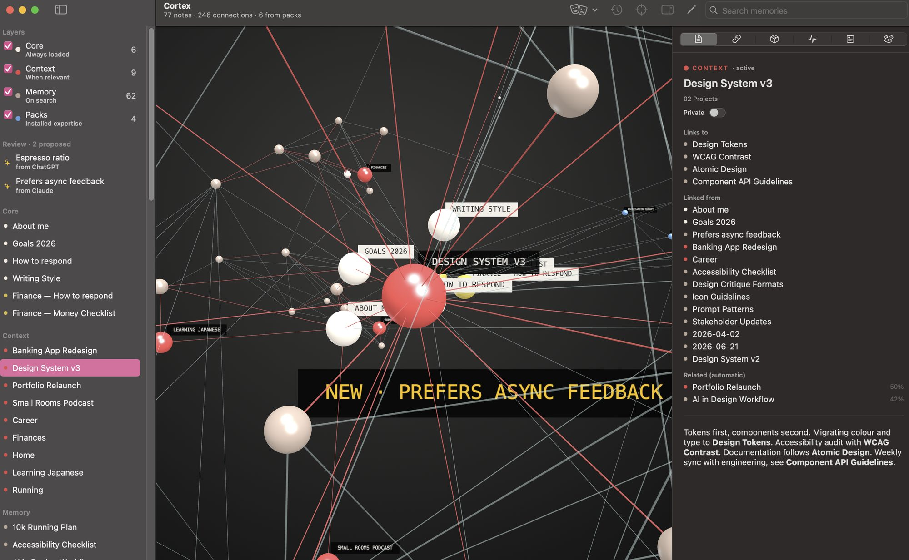
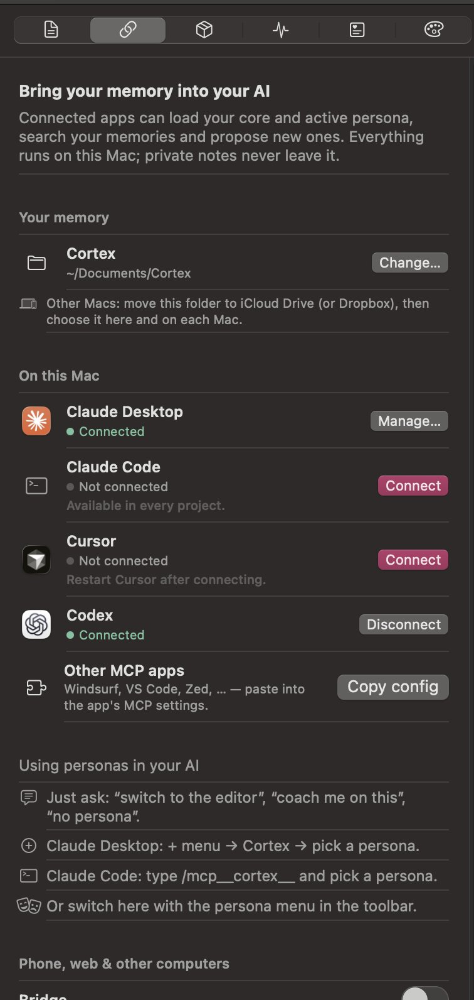
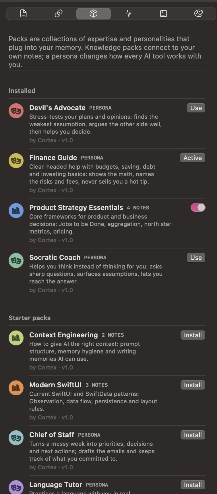
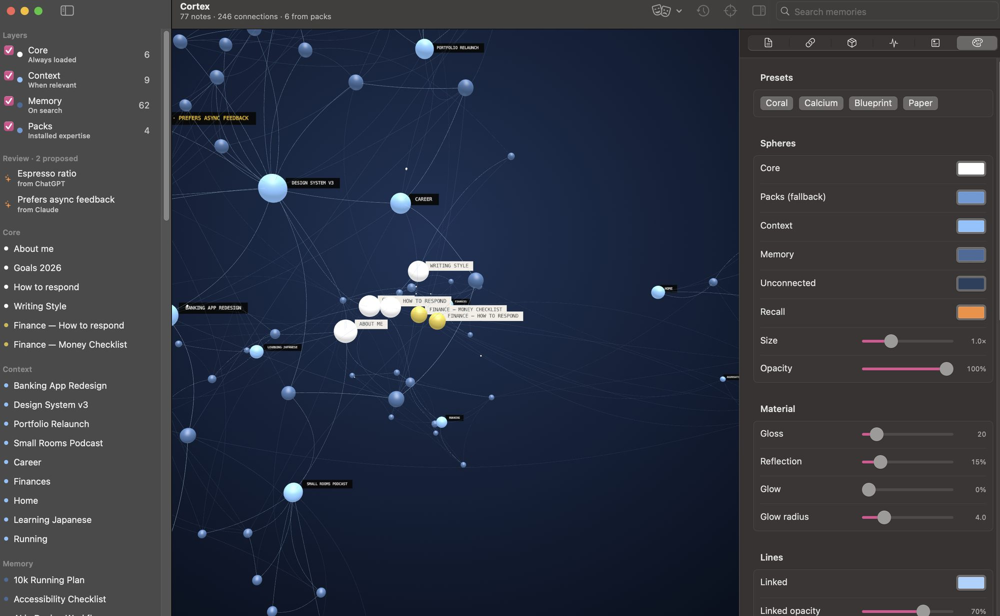
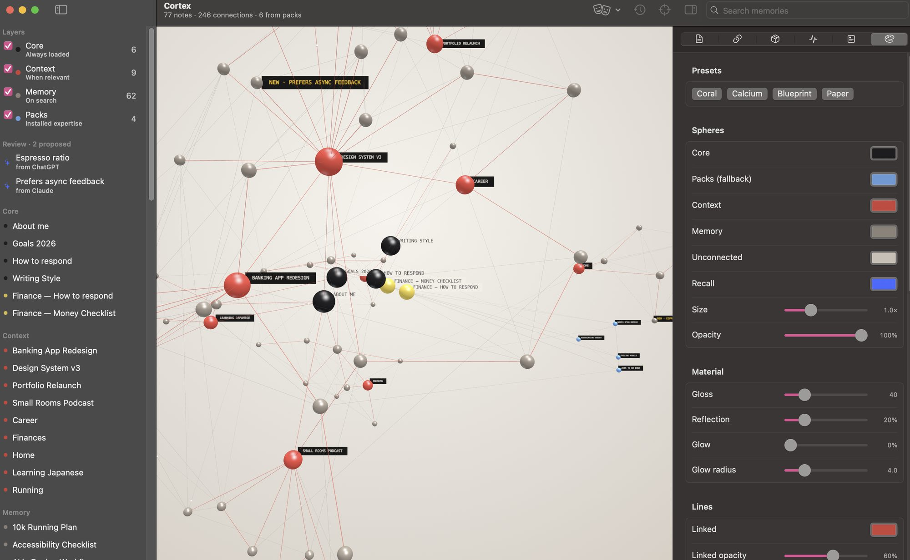

Self-initiated product · macOS app, open source
Cortex
A second brain your AI can actually read.
Every morning I introduced myself to an AI. Who I am, what I am working on, that I prefer short answers. Then the chat closed and we were strangers again. My notes were never the problem — they have lived in a Markdown vault for years. The problem was that the AI could not open them. Cortex is the bridge: a Mac app that turns the same folder of notes into a memory that Claude, ChatGPT, Cursor and Codex can search, and draws it as a neural network you can watch think.
- Role
- Everything — concept, interaction design, SwiftUI app, 3D graph, MCP server, OAuth bridge, packs and release.
- Why
- To stop repeating myself to every AI tool, and to find out what an AI memory looks like when the user stays in charge of it.
- Platform
- macOS 15+ · SwiftUI · three.js · Model Context Protocol · on-device embeddings.
- Status
- Free and open source under the MIT license. Version 0.4, October 2026.
macOS 15 or later · Apple Silicon and Intel · MIT license
The reader has changed
Note-taking tools like Obsidian are excellent at what they were built for: a human reading their own notes. But most of what I write now gets read by an AI first, and that reader has three problems. It cannot open the vault. It cannot follow me to my phone or to a second laptop. And it has no idea which version of me it is talking to — the designer, the runner, or the person trying to understand their pension.
The obvious answer is the one every AI company is building: a memory inside their product. I wanted the opposite. One memory that I own, in plain files, that every AI can borrow — and that I can read, edit, delete or move without asking anyone.
All screenshots run on a demo memory with made-up notes. A personal memory is exactly the kind of thing that should not end up on a portfolio — which is also the design principle of the product.
Not everything deserves the same attention
Dumping every note into every conversation is the fastest way to make an AI worse. So the central design decision is a hierarchy: three layers that decide when the AI gets to see a note. The layers come from the folder a note already lives in, so an existing vault works on day one without reorganising anything.
Always loaded. Who I am, how I want answers, my writing style, my goals. A handful of notes that every AI reads before it says anything.
Active projects and areas. Recalled first when a question touches them, and dropped automatically when a project is marked done.
Everything else — books, recipes, trips, old decisions. Found by meaning when it becomes relevant, invisible when it is not.
Recall you can watch
Search runs by meaning, not by keyword, using Apple's on-device language model — nothing is sent anywhere to compute it. Ask "how do I get faster at running?" and Cortex finds the 10k plan, the nutrition note and the strength routine that fixed a knee, even though none of them contains the word "faster".
Why the graph is not decoration. An AI that quietly reads your notes is uncomfortable, however useful. When Claude searches from a chat window, the matching spheres light up in Cortex in real time. The visualisation turns an invisible retrieval step into something you can see and therefore trust — or catch when it is looking in the wrong place.
Every sphere is a file

Markdown stays the source of truth
Cortex never converts, imports or locks anything. Notes stay plain .md files that open in any editor, sync through iCloud like any other folder, and survive the day Cortex stops existing. The app is a lens on the folder, not a container for it.
Links you write, and links it finds
Wikilinks are drawn as solid connections. On top of that, Cortex compares every note by meaning and adds the five closest neighbours as quieter lines — which is how two notes about the same idea find each other, even when nobody thought to link them.
One memory, every AI

An open standard instead of an integration per app
Cortex speaks the Model Context Protocol, the standard AI apps use to plug in tools. That means one small server gives the AI five abilities — load the core, recall, read a note, propose a memory, switch persona — and every app that speaks MCP gets them for free.
Connect is a button, not a config file
Wiring an MCP server usually means editing JSON in a hidden folder. Here it is one click for Claude Desktop, Claude Code, Cursor and Codex. Configs are merged, never overwritten, and every connection can be undone the same way it was made.
The phone problem
A memory that only exists on one Mac fails the moment you pick up your phone. The Bridge publishes the memory through a secure tunnel so Claude and ChatGPT on the web and on the phone can use it too. Every new device must be approved with a pairing code shown in the app — the address alone opens nothing.
Same memory, different attitude

Personas change how the AI works with you
A persona is a small set of notes about behaviour: how to respond, what to ask first, what never to do. When one is active it joins the core, so every connected AI adopts it at once. Saying "be my devil's advocate" in any chat switches it — the AI calls Cortex and changes its own instructions.
Twelve starter packs, written to be useful
Finance Guide shows the maths, names the fees and refuses hot tips. Devil's Advocate steelmans your idea before attacking its weakest assumption. Language Tutor corrects after it answers, never during. There are knowledge packs too — product strategy, context engineering, modern SwiftUI — that join your own notes in recall.
A pack is just a folder
A manifest and a few Markdown files. Anyone can write one, export their own notes as one, and share it — which keeps the format as open as the memory itself.
The AI proposes, you decide
AI tools can write to the memory, but never directly. When Claude or ChatGPT wants to remember something, it lands in an inbox as a proposal, marked with where it came from. Until it is accepted, no AI can see it. One click accepts or discards it — the same habit as reviewing a pull request, applied to what a machine believes about you.
A graph you want to look at
If a tool asks you to maintain something every day, it had better be pleasant to open. The graph is drawn in three.js with glossy spheres, soft reflections and small pulses travelling along the connections. Colours, gloss, glow, line thickness and curvature are all adjustable, with four presets as starting points.


How it is built
A native SwiftUI app with the graph rendered in a web view, plus a small command-line helper that does the talking to AI apps. Designed and built in three days, with Claude Code as my pair programmer — which, given the subject, felt like the only honest way to build it.
- Plain .md files, any editor
- Layers from folders or frontmatter
- iCloud or Dropbox for other Macs
- SwiftUI app, three.js graph
- On-device embeddings for recall
- OAuth 2.1 bridge with pairing codes
- Claude, ChatGPT, Cursor, Codex
- Desktop, web and phone
- Private notes never leave
Try it
Cortex is free and open source. Download the app, point it at a folder of notes (an Obsidian vault works as is), and click Connect next to the AI apps you use. The source, the starter packs and the setup guide are on GitHub.
The app is not yet signed with an Apple Developer ID, so macOS asks once before the first launch. The README explains how to allow it.